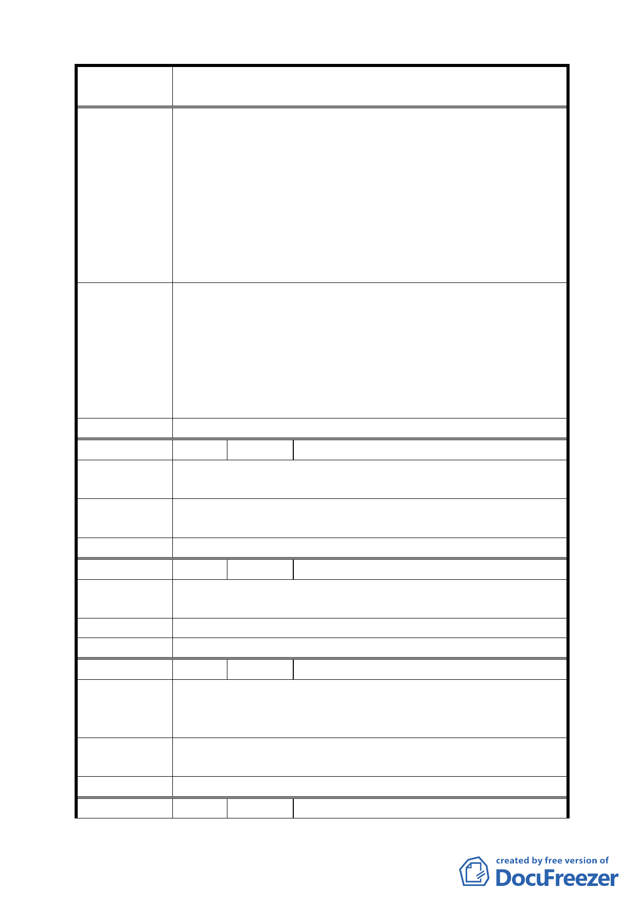

案
名
修訂臺北市信義區逸仙段 3 小段 294-4 地號第 4-1 種
住宅區（特）土地使用分區管制計畫案
沿線道路之新建建築物牆面線產生不一致之情事，影響
市容觀瞻。
二、依修正變更內容第二點所載不設置騎樓勢必肇使學童、
過往行人及至國父紀念館運動之老人家得遭受無法遮
陽蔽雨之苦！
三、規定不得設置騎樓：此舉限制本案設計規劃及住戶整合
彈性空間，勢必增加整合重建之困難。
四、新計畫建蔽率為 60％，雖對本案有所助益，但仍小於現
住戶之產權面積
一、修正變更內容第一項新計畫建蔽率；可否體恤新計畫建
蔽率仍小於現住戶每戶之產權面積及本案尚有多數容積
率未能用完之因素。適度提高建蔽率以利住戶整合，使
建 議 辦 法 改建順遂。
二、修正變更內容第二項改載：依現行法規規定本案基地沿
仁愛路光復南路側應設置騎樓或退縮留設 3.64 公尺之
無遮簷人行道。
委 員 會 決 議 維持原公展計畫。
編 號 ３ 陳情人 陳林素琬
陳
情
理
由
修正應退縮 3.64 公尺無遮簷人行道之規定，此舉增加整合
重建困難。
建議辦法
請依現行法規規定應設置三分之二以上騎樓或退縮 3.64 公
尺之無遮簷人行道。
委 員 會 決 議 維持原公展計畫。
編 號 ４ 陳情人 周旻寬
陳
情
理
由
雖修訂計畫建蔽率改為
積小。
60％，但是仍比現在住戶之產權面
建 議 辦 法 請以原地面樓層產權面積加上騎樓以利本大樓之重建。
委 員 會 決 議 維持原公展計畫。
編 號 ５ 陳情人 蔡麗華
依修正變更內容第二項所載：本基地沿仁愛路、光復南路應
陳 情 理 由 退縮留設 3.64 公尺之無遮簷人行道。此舉限制住戶整合彈
性空間，增加整合重建困難。
建議辦法
修正變更內容第二項為依現形法規規定本基地沿仁愛路光
復南路側應設置騎樓或退縮 3.64 公尺之無遮簷人行道。
委 員 會 決 議 維持原公展計畫。
編 號 ６ 陳情人 邱鳳琴
12